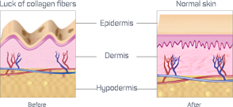
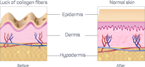

- Usuwa 99% kurzych łapek w ciągu 2 tygodni
- Podnosi opadające powieki dzięki olejkowi jojoba
- Sprawia że skóra staje się młoda i piękna,
przenikając do głębokich warstw naskórka - Opóźnia proces starzenia
- Jedyny krem z podwójnym efektem

sławy gwiazd pop
Hit sprzedaży
w 2016 roku
- Ze względu na unikalny i naturalny skład oraz zastosowanie najnowszych osiągnięć w dziedzinie zimnej ekstrakcji biologicznie aktywnych substancji roślinnych, krem XXX umożliwia Ci całkowite pozbycie się zmarszczek wokół oczu oraz głębokich zmarszczek na twarzy bez użycia lasera, wstrzyknięć botoksu i operacji plastycznych.
- W 2016 roku krem XXX pobił wszystkie rekordy sprzedaży i stał się głównym środkiem na walkę ze zmarszczkami w Stanach Zjednoczonych i Europie.
- Efekty kremu XXX widoczne są już po pierwszym zastosowaniu – zmarszczki wokół oczu zaczynają znikać. XXX polecany jest wszystkim kobietom w wieku co najmniej 25 lat w celu korekcji zmarszczek i kobietom w wieku 20 lat w celu zapobiegania starzenia się skóry.
- Głęboko przenika w skórę, całkowicie wygładza zmarszczki
- Stymuluje produkcję kolagenu i elastyny
- Usuwa zarówno drobne linie, jak i głębokie zmarszczki
- Wypełnia skórę witaminami i mikroelementami
- Tworzy warstwę ochronną na skórze i zapobiega jej starzeniu
- Eliminuje obrzęki i ciemne koła pod oczami
- Zwiększa elastyczność i odporność skóry, przywraca jej strukturę
- Zapewnia skórze wspaniały wygląd
- 1Dokładnie usuń makijaż
 2Nałóż małą ilość kremu pod oczy
2Nałóż małą ilość kremu pod oczy- 3Powtarzaj czynność każdego wieczoru przed pójściem spać
 4Zmarszczki będą stopniowo zanikać
4Zmarszczki będą stopniowo zanikać
bezlitosny. XXX pomaga
zmniejszyć jego działanie na
twarz. Z kremem XXX nawet w
wieku 50 lat możesz wyglądać
na zaledwie 30!
 

Włókna kolagenu i elastyny są odpowiedzialne za elastyczność i odporność skóry. Wraz z upływem czasu, kolagen produkowany jest w coraz mniejszych ilościach, a włókna elastyny rozdzielają się. W rezultacie, skóra potrzebuje więcej czasu do tego, aby powrócić do stanu przed deformacją. To z kolei powoduje powstawanie zmarszczek i opadanie skóry. Ponieważ skóra wokół oczu jest bardziej delikatna i wrażliwa, a dostawa włókien elastyczny zostaje ograniczona, wokół oczu zaczynają pojawiać się zmarszczki.
„Obecnie na rynku dostępnych jest wiele środków sprzyjających wygładzaniu zmarszczek, jednak krem XXX zdecydowanie wyróżnia się na ich tle swoją skutecznością i bezpiecznym, całkowicie naturalnym składem. Krem XXX skutecznie opóźnia proces powstawania zmarszczek i umożliwia ich całkowite usunięcie z okolic oczu i ust. Dzięki niemu już wiele osób poczuło się młodziej bez użycia botoksu i operacji plastycznych.
Krem zawiera wysokie stężenie olejków Macadamia i jojoba, które razem bardzo głęboko przenikają w skórę. Ułatwiają one syntezę kolagenu i elastyny, przywracają elastyczność i odporność skóry, a do tego skutecznie usuwają obrzęki i nadmiar wody ze skóry.
W większości przypadków, w celu szybkiego odmłodzenia skóry, polecałem pacjentom salo kosmetyczny, ale obecnie proponuję im krem XXX. Jest o wiele tańszy i można go stosować w domu.”

- Mężczyźni znowu będą prawić Ci komplementy
- Staniesz się ponownie bardziej atrakcyjna seksualnie
- Zmniejszysz szanse na zdradę bliskiej Ci osoby
- Zwiększysz pewność siebie
- Opóźnisz skutki upływu czasu

Uwaga Oświadczenia przedstawione na naszej stronie zostały ocenione przez FDA (U.S. Food & Drug Administration). Ten produkt nie jest przeznaczony do wystawiania diagnozy, leczenia chorób lub zapobiegania im. Informacje przedstawione na stronie lub przez firmę nie mogą zastąpić bezpośredniej konsultacji z lekarzem i nie powinny być traktowane jako indywidualna porada medyczna. Opinie przedstawione na stronie opisują indywidualne przypadki. Nie możemy zagwarantować, że Twoje wyniki będą takie same.
Copyright © 2017
MAsterSPA, LLC ITN 104380285762 PRSN 427602692592

This site is owned and operated by Pure Cambogia Ultra.
Pure Cambogia Ultra contains multiple Web pages operated by Pure Cambogia Ultra. This offer is available for you and is subject to the acceptance of the following terms and conditions. Your use of the Pure Cambogia Ultra site and related offers represents your consent to all such terms contained herein. Pure Cambogia Ultra reserves the right to change the terms in which this offer is being offered. Please check this page for any changes. Pure Cambogia Ultra seeks to ensure that all available information on the website is accurate and true, however there is no guarantee. These terms and conditions apply exclusively, although in contrast to the general or specific conditions or stipulations of the buyer. These conditions will remain in force during the sale and during the relevant activities relating to such sale.
The price of this product is the price set at the time of purchase and may change from time to time if it is used to complete a new purchase. In no event shall the purchase price of today guarantee a price for future purchases not related. The price does not include shipping and applicable operating costs that may be evaluated based on the amount of purchase.
* International fee of up to 15% may apply.Single purchase: Thank you for your purchase, your shipment will be processed once we receive confirmation of payment. This purchase is subject to charge only through the method of payment. If you wish to receive new orders of Pure Cambogia Ultra it is necessary to submit a new order. The price of future purchases can not be guaranteed.
Live email support is available: support@biotrimlabs.com
Or you may call us toll-free:AU +61-(0)2 8036 3151
We use the information we collect on our websites to provide a superior shopping experience and to communicate with you about products, services and promotions. We collect information about you when you register on our site, place an order, subscribe to our newsletter, respond to a survey, or fill out a form.
The following types of information about a user are among those that may be collected by us in relation to the site: name, postal address, e-mail address, telephone number, mobile phone number, payment information (such as card numbers credit and billing address if purchases or payments are made), date of birth, age, sex, other demographic information (such as occupation, income bracket), IP address, referring site, and other technical information collected by the site server.
In connection with the web site, we may collect information in the following ways:
- Through registration forms filled out by a user on the Site
- Through the information provided by a user in connection with the purchase of products or services on the Site
- Through the maintenance and analysis of Web server logs
- Through calls and e-mail users
- Through Internet chat sessions between a user and this site
- Through the use of this site to third-party databases from which user information is extracted and combined with information obtained from this site by other means.
We can also connect to personally and non-personally identifiable information from users via "cookies" (small text files placed by this site on users' computers), GIF image files to single-pixel (also called "Web beacons"), the Web server log analysis and other similar technological means. This information can be used to track the trends of the site and improve the user experience, and may be shared with third parties.
To the extent that third parties may place advertisements on the Site, such third parties may use cookies or other technological means within the advertising to collect and use non-personally identifiable information. We are not responsible for information collected by AU +61-(0)2 8036 3151
Email Customer Service is available 24 hours a day at support@biotrimlabs.com
Toll-free Customer Service is available 5 days a week, from 9:00 to 17:00 (CET) at: AU +61-(0)2 8036 3151
All returns must be sent to:
Attn: Returns Department PO Box 1201 Singapore, 918118, SG
 X
X

The International Medical Association approves the product we offer. It passed all the necessary clinical tests and was thoroughly studied by a commission of doctors.